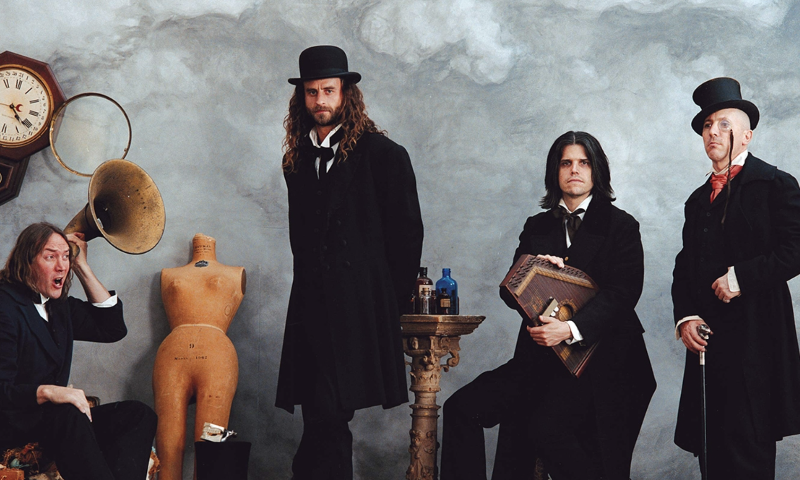
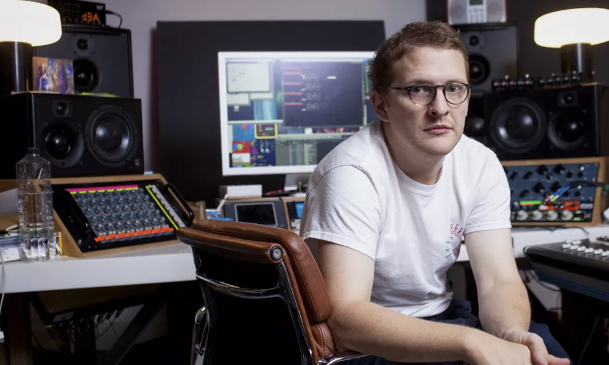
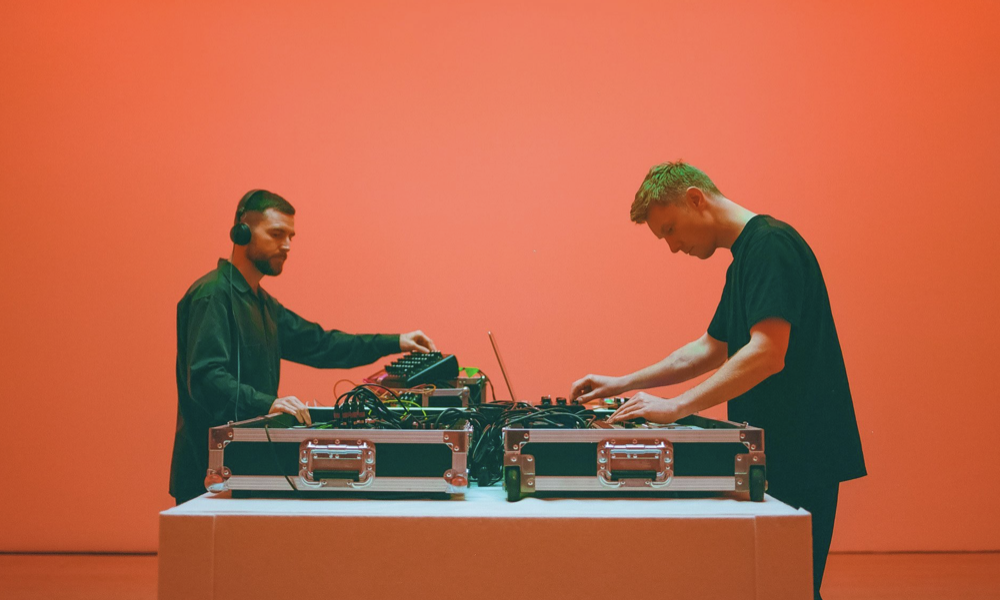
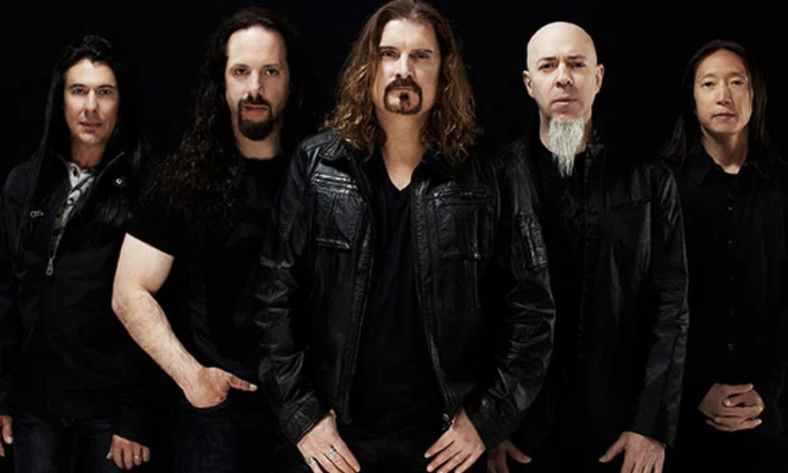

Top Five Artists
My Top Five Favourite Musical Artists
-
Tool

Years Active:1990 - Present
From:Los Angeles, California
Current Members:
- Vocals: Maynard James Keenan
- Guitar: Adam Jones
- Bass: Justin Chancellor
- Drums: Danny Carey
-
Floating Points

Years Active:2008 - Present
From:Machester, UK
Name:Sam Sheperd
-
Bicep

Years Active:2009 - Present
From:Belfast, Northern Ireland
Current Members:
- Andrew Ferguson
- Matthew McBriar
-
Nick Johnston
Years Active:2011 - Present
From:Ontario, Canada
-
Dream Theater

Years Active:1985 - Present
From:Boston, Massachusetts
Current Members:
- Vocals: James LaBrie
- Guitar: John Petrucci
- Bass: John Myung
- Drums: Mike Mangini
- Keys: Jordan Rudess